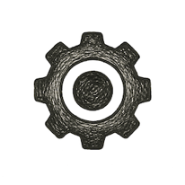
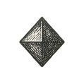

Solid State Sparks

Interlude 1
The Birth of Computing
Solid State Physics
My mother’s hand once circled a faint track on photographic film — the ghost of a particle that had wandered, left its signature, and vanished. At almost the same time, in an adjacent building on the same campus, my father’s hands drew loops of another kind — the tight spirals of a highway interchange. Her lines described what matter was doing. His lines planned what people would do with it once it settled down - and poured as gravel and sand.
Between their two lines — one on film, one on vellum — the whole spectrum of making was quietly rehearsed: from the early motions of our world to the deliberate shaping of them.
One tried to see how matter is carved.
The other tried to show how we carve matter.
Both trusted the same trick: do something simple, over and over, until pattern hardens into order.
My father’s blueprints were lattices of motion — grids through which cars and cargo would flow, each junction a question, each loop a recurring argument with traffic. Underneath those neat lines lay sand, crushed quartz, silicon dioxide: the same stuff that coats beaches, fills concrete, and later, almost as an afterthought, became the base material of thought.
What he built in sand for cars, later generations — my own included — would build in the same sand for electrons. Highways and microchips: two geometries of flow, both born from silicon, both children of the same patient geology.
If cosmic inflation was nature’s way of stretching quantum ripples into galaxies, then silicon lattices were humanity’s way of stretching atomic regularity into computation. In both cases, repetition did the heavy lifting. We just changed what was allowed to repeat. In each instance, the relentless regularity of repetition allowed for the emergence of vast, complex new realities.
Repetition as Creation
Repetition has always been the universe’s quiet party trick. In physics, it births stability. In life, it breeds form. In thought, it becomes understanding.
The first miracle of the cosmos was not complexity, but consistency: a handful of physical rules run on infinite loop. Fields vibrated just steadily enough that the whole contraption didn’t shake itself apart. The same equations kept being applied to new situations, like a cosmic bureaucrat stamping “Approved” on one region of spacetime after another. Until whatever we choose to call reality on a given weekend, could scaffold itself.
The grammar carries downward.
When atoms settle into orderly arrays instead of a random scrum, they begin to sing in unison. Their quantum states overlap, forming collective harmonies — bands, gaps, currents — that no single atom could manage on its own. The universe repeats itself across scales:
the inflationary field becomes the galaxy cluster,
the atomic lattice becomes the microchip,
each a higher symmetry folded out of a simpler one below.
This is where solid-state physics enters the story — not as a digression from cosmology, but as its local accent. The same principles that governed the early universe — symmetry, fluctuation, stability — now govern the tiny universes we cook in clean rooms.
Silicon wafers are miniature cosmoses: cooled, flattened, and stretched just enough to hold a second kind of expansion — the expansion of logic.
Repetition’s Mirror
In Chapter 1, repetition in possibility space gave us reality: a universe where laws behaved themselves long enough for galaxies and Fokker flights to happen.
Here, in the silicon mirror, we try the trick in reverse: starting from that settled reality of physics and lining it up in careful rows to create new possibilities — circuits, computers, networks, AI, AR, XR, digital twins, and other acronyms that sound like future tense.
If physics was the first draft of “something from nothing,” the silicon story is our attempt at “more from something.”
Toward the Solid-State Frame
If Chapter 1 told the story of the cosmic loom, this interlude is about the thread we’ve woven on top of it. The universe gave us the pattern: periodicity, coherence, constraint. We — the lab-coated and the coffee-fueled — gave it intention. We took atoms that already knew how to repeat and taught them how to compute.
Before diving into band structures and transistors, it’s worth pausing on this continuity. The physics that once stabilized space now stabilizes information. Repetition in great numbers doesn’t just give you sturdiness; it gives you new laws. Galaxies obey gravity not one star at a time, but as a collective. Crystals conduct electricity not one atom at a time, but by sharing a pattern.
Emergence is just repetition that has lived long enough to get a job. And silicon is one of its most eloquent dialects.
The Physics of the Possible
Before circuits and code, there was only matter — quiet, mostly, and not taking calls. Yet even “inert” matter has a kind of restlessness. Every atom jitters in its quantum cage; every vibration is a tiny coin flip: stay local, or join a rhythm? Condensed matter physics studies what happens when atoms choose rhythm.
Pack them tight, cool them down, and instead of behaving like a crowd of drunks, they sometimes agree on a dance. Their wavefunctions overlap, and suddenly the laws that apply to one particle don’t quite capture what the whole group is doing. Electrons begin to move as if the entire lattice were their home address.
This specific arrangement —the rigid, crystalline solid— is the province of solid-state physics — the study of how atoms, when densely packed in an ordered way, give rise to behaviors neither wholly quantum nor classical. It is a physics of collective emergence: where the crowd writes its own laws.
No single atom knows what “conductivity” means. No electron alone can “store” information. But when arranged in unbroken repetition, they do. Order, when multiplied, becomes possibility.
In this way, the solid state is a mirror of the cosmic state. Just as the early universe found coherence in repetition — in a handful of constants replayed across all spacetime — the solid state finds coherence in geometry, in the periodicity of its lattice. Repetition gives birth to constraint, constraint gives rise to pattern, and pattern to new rules.
Lattices: The Grammar of Order
A crystal is the universe’s simplest poem: one verse, repeated until you run out of patience or material.
Take silicon. Each atom links arms with four neighbors, forming a tetrahedral network so regular it could be accused of being dull. Yet inside that apparent stillness is a subtle permission for motion: electrons aren’t frozen; they’re shared.
At this level, symmetry is both freedom and confinement. It decides what an electron may do and what it will never do. In a disordered solid, electrons scatter like voices in a noisy bar. In a crystal, they form a choir: individual voices – their wavelengths – blur into a single, extended song.
This collective resonance is what we call the band structure — a hierarchy of allowed and forbidden energy states. In a single atom, these states are discrete notes. In a lattice, they merge into scales — continuous bands where electrons can play. Between those bands lie gaps, energy gaps where no stable electron can perform. You’re either performing with the Beatles or the Stones — there’s no middle frequency.
And just as music derives harmony from its restrictions, so does matter. The gaps define the melody. The forbidden makes the possible meaningful.
From that simple sheet music, we get three broad personalities of matter:
Conductors like copper, where bands overlap and electrons move freely. Think Leonard Bernstein mid-symphony: everyone playing at once, and somehow the lights stay on.
Insulators like quartz, where gaps are wide and motion is forbidden. More Glenn Gould: precise, contained, and not about to start improvising.
Semiconductors like silicon, balanced on the knife-edge between stillness and flow. A small nudge – some heat, a photon, a voltage – and the system changes its mind. That’s Mozart at the keyboard, playing between order and mischief.
It was in that in-between region — neither conductor nor insulator, but bribable — that humanity found the switch, and with it, the seed of logic.
Repetition Begets Choice
Repetition gives you order; controlled imperfection gives you meaning.
For in silicon’s perfect lattice, we found a paradox: too much order, and nothing happens. Electrons stay bound, potential locked away. But introduce a trace impurity — one atom in a million replaced with something else — and suddenly, the material awakens.
This process, called doping, is the deliberate insertion of asymmetry — the art of making perfection misbehave on command.
Add phosphorus, and you sneak in extra electrons (n-type).
Add boron, and you create “holes,” places where an electron could be but isn’t (p-type).
Add morons to the design committee, and you get a bloated roadmap and a chip that ships late.
At the boundary between p-type and n-type — the p–n junction — the rules of flow acquire conditions. Voltage stops being a gentle suggestion and becomes an actual decision.
Out of that marriage of repetition and deviation, the first act of computation emerges. The universe, once content merely to expand and cool, now begins to compute about itself.
In those tiny impurities lies the first hint of something like informational gravity: the tendency of order to bend around what can remember. Once a system can remember one bit reliably, it can start to favor states that preserve and elaborate that memory. Randomness bends, ever so slightly, toward configurations that can keep a story going.
Within that impurity was the first hint of what we might call informational gravity — not a new physical force, but the tendency of order to bend around whatever can remember. Every stable pattern attracts another until meaning itself behaves like a kind of force field in state space, gently curving random noise into thought. Silicon learned to do, in miniature, what spacetime pulled off at scale: keep the conversation going.
Emergence as the Bridge
Here we see the essence of emergence — the lesson that quietly binds the spine of this book. When repetition reaches critical scale, new rules appear. A lattice of silicon atoms knows nothing of logic gates, yet their collective doped behavior creates the substrate for logic.
At that point, physics gives way to possibility. The same element that once lay as dust under my father’s highway sketches now holds the circuits that simulate galaxies, price derivatives, route trucks, and occasionally “help” you glue your pizza together.
Sand became silicon; silicon became syntax.
Each layer of repetition births the next:
Quantum fields → atoms
Atoms → crystals
Crystals → circuits
Circuits → computation
Reality, it seems, is a recursive poem of emergence — the same stanza, rewritten in finer hand each time.
Band Theory and the Birth of Semiconductors
If physics gave us the structure, it took a few stubborn Midwesterners to give it a job description. One of them — John Bardeen — became the only person to win a Nobel Prize in Physics twice.
By the time I walked the corridors of the University of Wisconsin–Madison’s Electrical Engineering building, Bardeen had long departed that place. I had no idea I was sharing a hallway with history. As far as I knew, “Bardeen” was just another one of those whose work made my homework longer. The only thing I would have envied him for was he didn’t have to take Professor Arthur Tiedemann’s electronics class back them.
Grading at Madison back in my day was already Ebenezer Scrooge’s wet dream, and Tiedemann wouldn’t even hand out a partial credit. In his tutelage electronics needed to run at scale, forever, and without an error. I was one of those students who would start the solution but ultimately would get tired of punching the calculator keys step after step, and somehow always doubting a bit my ability punch in the digits right. I would rather write the trailing steps of an ideal diode equation solution in words or pseudo answers. But that slight clerical laziness, “then everything is wrong,” and you get a big fat zero. No wonder I now draft requirements and algorithms, and not solve numbers.
I quickly moved to digital electronics – now I at least knew the true from false. And ultimately to software – no closed solutions anymore: find an error, fix it, iterate. Oh, don’t forget to rinse first – always, refactor and code review. But those are the next moves: our future interludes. First, we need to lay down the heavy stones.
The No-Partial-Credit Principle
For all my complaining, Tiedemann was right about one thing: some layers of reality are brutally zero-sum.
Semiconductors are like that. If your junction is off by a factor of ten, the device doesn’t “sort of” work. It just doesn’t. An airliner doesn’t stay “mostly in the sky”; a bank ledger doesn’t tolerate “roughly correct” balances.
So that “no partial credit” ethic stuck with me. To this day, whenever I design or critique a system, I find myself asking: if this fails by 5%, who eats the 100% of the consequences?
Over time, though, I also learned a quieter counter-truth: life itself is mostly partial credit— a long, collaborative exercise in mutual leniency. We rarely get the right answer, but we often get close enough, and then agree to call that truth. Civilization, too, is partial credit — a society of approximations, stable not because it is perfect but because it is forgiving.
Good systems live in the tension between those two poles: ruthless in the layers where failure is lethal, forgiving everywhere else. But not too forgiving, lest you drown in what software people now call technical debt — unpaid compromises with interest.
The Alchemy of Choice
Semiconductors, when you strip away the mystique, are rocks we have tricked into making decisions.
At the quantum level, electrons don’t care about our intentions. They move according to wave equations and probabilities, not product roadmaps. But once we carve channels in silicon, introduce carefully chosen impurities (dopants), and apply electric fields, that randomness can be steered. A transistor is that steering mechanism in silicon: a microscopic “if–then.”
If the control voltage is high, then let current flow.
If not, hold the line.
Every if, then, and else in modern computing is ultimately some variation of that one move: a gate deciding whether a handful of electrons goes left or stays put.
In that sense, the transistor is more than a component; it’s a philosophical object: determinism on the inside, choice on the outside.
Bardeen, along with Walter Brattain and William Shockley, didn’t just invent a device; they proved a principle: matter can be persuaded to compute.
A basic bipolar transistor is just an arranged conversation between n-type and p-type material — an n–p–n or p–n–p sandwich. One junction lets current happen; the other junction decides under what conditions. A small current at the base controls a much larger current between collector and emitter. It’s leverage in elemental form.
Put a few of these together and you get logic gates — AND, OR, NOT — the toddler vocabulary of machines. With enough of them, you get adders, multiplexers, and eventually a processor that can play chess badly or optimize ad delivery frighteningly well.
What neurons pull off with ions and synapses, silicon does with carriers and junctions: slower to appear in history, faster once it gets going, and almost offensively patient.
But single transistors, heroics aside, weren’t enough. If electrons were going to think together at scale, the underlying structure had to grow up. We needed a way to make the silicon itself carry more of the burden.
Enter the quiet witchcraft of growing and etching order.
Growing Thought – Photolithography and Epitaxy
Ordered Growth
Epitaxy is a word that sounds like a skin condition but is really gardening for atoms.
You start with a polished wafer — a disc of silicon whose atoms are already holding hands in a neat crystal lattice. Then you encourage new layers to grow on top, one atomic sheet at a time, aligned so precisely that the new lattice continues the old one without a hiccup.
We don’t so much build structures as we coax them into existence. The silicon copies its own pattern upward, like a brick wall deciding to keep going because the bricks below looked confident.
In my introductory devices class, this was the bit that blew my mind. We had taken the grand, indifferent laws of thermodynamics and turned them into a kind of precision agriculture. “Please grow up, but only in this orientation, with this purity, and don’t embarrass us in the lab report.”
We were farming universes on dinner-plate wafers.
And just as I was starting to admire the Zen of it all, the process promptly got weird.
The Mask and the Mirror
Right after epitaxy’s calm, photolithography arrives like a practical joke designed by very tidy goblins.
The rough sequence goes like this — and, in spirit, still does:
Coat the wafer with a light-sensitive film called photoresist.
Lay down a mask — a tiny, quartz-and-chrome stencil of the circuit you want.
Shine ultraviolet light through the mask.
Develop the image like a photograph; exposed regions of the resist change their chemistry.
Wash away the softened parts, exposing naked silicon beneath.
Etch that exposed silicon.
Strip the remaining resist.
Repeat until you question your major.
Layer after layer: cover, expose, etch, clean. Protect, reveal, destroy, preserve. It’s less like fabrication and more like a liturgy.
To me, this was the most literal metaphor for cognitive load I had ever seen. The chip is too intricate to work on directly — our minds cannot hold its final complexity in one piece — so we invent indirection.
We don’t draw the chip. We draw the masks. The masks stand between us and the final object like a row of translators: thought → layout → mask → light → etch → device.
In AI textbooks, there’s a classic problem about monkeys, a box, and some bananas placed just out of reach. The smart monkey doesn’t leap; it moves the box. In IC fabrication, the mask is the box — the extra object we introduce so we can solve a problem that was impossible in its original form. In the preceding chapter we saw the cosmos having jumped its own early quantum loops – no wonder its Anthropic flavor arrived ready to host us primates!
Here, the abstraction is made out of glass and chrome.
And, we do the same trick everywhere:
Language stands between thought and speech.
Code stands between logic and metal.
Protocols stand between intent and action.
When a problem is too hard to attack head-on, we invent a layer in the middle and talk to that instead.
Once we learned how to grow crystals with epitaxy and how to carve them with light, history hit fast-forward. Each generation of process technology made smaller features possible, which made more transistors feasible, which made new architectures worth imagining.
The masks got finer; the circuits got denser; the abstractions stacked higher.
Before long, we weren’t just drawing patterns in silicon. We were teaching matter to host hierarchies of meaning — a step that would eventually invite something unnervingly close to thought.
Integrated Circuits and the Art of Scaling
If epitaxy taught us how to grow clean crystal, and photolithography taught us how to scratch patterns into it, the next miracle was figuring out how to make all those patterns think together without tying ourselves in wires.
In 1958 and 1959, Jack Kilby and Robert Noyce noticed what everyone else was suffering through: the transistor was no longer the problem — the spaghetti between them was. We had built good little switches; we were just drowning in legs and solder.
Their idea, once they’d had it, seemed almost stupidly obvious: put everything on one piece of silicon. The transistors, the resistors, the wiring — all carved out of the same slab.
The result was a new ontology of matter. For the first time, intelligence was an intrinsic property of geometry.
Each transistor became a cell in a tissue; each connection, a synapse. The chip itself was no longer a sum of parts, but a phase transition — a threshold crossed when repetition reached critical mass.
Hierarchy as Invention
What followed was less invention than iteration. Circuits became subsystems, subsystems became processors, processors became architectures.
The hierarchy mirrored every living thing: molecules forming cells, cells forming organs, organs forming thought.
We discovered that the key to scaling complexity wasn’t brute force, but modularity. We stopped building parts, and started building rules for assembling parts. From there, computing became an evolutionary process, each generation refining the previous, guided not by design alone but by selection pressures of efficiency and heat.
And as with biology, we learned that abstraction is survival. A good chip, like a good organism, hides its mechanisms beneath layers that serve higher purposes.
In this way, every new generation of processors became more opaque — more like us. The more powerful they grew, the less we could see how they worked, even though we had built them.
The Ascendance of Parallel Thought
For decades, progress meant making things smaller and faster — until we realized there were limits to both. The laws of physics, ever patient, began to tighten their grip: heat, leakage, quantum tunneling.
So we stopped trying to make one core sprint faster and started training crowds. The answer was parallelism: many modest brains instead of one overclocked genius. CPUs had marched like soldiers — one instruction after another. GPUs arrived and said, “What if we act like sardines instead?” Thousands of simple units doing very similar little jobs at the same time.
It turned out that a giant pile of “dumb but coordinated” is extremely good at drawing pixels, multiplying matrices, and training neural networks to guess what you meant.
Once again, repetition did the magic. A billion transistors, doing the same handful of chores, created behaviors no single transistor could dream of — if transistors dreamed, which is still up for debate.
The Age of Chips — When Matter Scales to Thought
he graphics processing unit didn’t come out of a philosophy seminar. It came out of people wanting better video games.
We asked the CPU to handle geometry, lighting, texture, physics, and everything else. It gave us a look and subcontracted.
The GPU was built to answer one question thousands of times in parallel: “Given this light and that triangle, what color does this pixel want to be?”
It turned out that this “same operation on lots of data” model is exactly what modern AI needs. You can almost hear the silicon groan: “Fine, I’ll stop drawing dragons and start fitting probability distributions. It's a dirty job, but someone's gotta do it.”
Chip architecture — how you arrange those cores, caches, and lanes — is just the set of rules for how this big silicon crowd thinks together. That’s what we’ll pick up in Interlude 3.
For now, the important bit is this: by stacking repetition on repetition, then wiring it sideways instead of just forward, we nudged matter over one more threshold. Electrons weren’t just flowing. They were taking part in something we could squint at and call thought.
From Electrons to Thought
In the same way that epitaxy grew order upon order, AI grew knowledge upon knowledge—one foundational pattern building upon the last until comprehension emerged from repetition. The lattice had become recursive. Matter no longer just conducted charge; it conducted understanding.
We have built, quite literally, a fractal of cognition. Each stratum is both substrate and metaphor for the next.
And somewhere between the silicon lattice and the neural lattice, between transistors and synapses, something uncanny occurs: matter begins to recognize itself.
But in order to be recognized, you have to first persist. In the next interlude we will see how information finds a home in this lattice. What constitutes data, and how it persists?
The Sand That Dreamed
In this precarious little corner of possibility space, we and our machines are basically elaborate sandbox games. My father drew channels in literal sand so cars and trucks could find their way. I later traced channels in refined sand so electrons could. Now, our circuits trace channels in behavior — recommendation paths, workflow paths, social feeds — so thoughts and attention can.
In the end, it’s all the same silicon rearranged: first as stone, then as glass, then as wafer, then as chip, then as model weights. If matter has a secret wish, maybe it’s this: start as dust under someone’s shoes, end as the thing deciding which book they read next.
And so the sand rests.
The same symmetry that made its atoms lock into a crystal will soon appear in another costume: carbon chains, water films, membranes, cells.
From Sand to Clay
If the universe’s first trick was stretching “almost nothing” into “something,” our next party trick was stretching sand into logic. The one we will get to next is stranger: stretching cells into selves.
The stretch of biology is different. Where physics expanded space, biology expanded time and number. Its growth is not in kilometers or parsecs, but in generations and mutations—its universe measured in heartbeats and geological epochs. And equally, biology’s stretch lies in memory: the quiet inscription of life’s code into the double helix, a stable data format written in the chemistry of carbon. DNA remembers—faithfully, though never perfectly.
It too has its version of doping: tiny copying errors and environmental nudges that keep the pattern from freezing. A species with no mutations goes extinct; a chip with too many does the same. And the professor laughs!
This is the lineage of remembrance: from the stable configurations of electrons in atoms, to the etched permanence of circuits on wafers, to the helical archives of biology, and onward to the magnetic and optical traces of data in silicon. Each layer is a different form of memory—each the next act in matter’s long rehearsal for consciousness.
Thus, we close the lid on the wafer and open the womb of the world.
From States to Signals
By the time the first integrated circuits flickered to life, I was almost ready to be conceived. The planet had learned to carve logic into matter. It was about to let matter carve logic into me.
The next frontier wasn’t electrons; it was encoding:
How do you turn a physical state into a signal?
How do signals become patterns?
How do patterns become stories?
At what point do the stories start insisting they are someone?
Before the algorithm, there was the axon. Before any circuit could calculate, a cell had to sense, and fire, and remember that it fired.
A few months after those first chips started counting for other people, a cell would start counting for me. And then, with time and a lot of practice, it would call itself “I.”
That is where Chapter 2 picks up: in the warm, messy, error-tolerant lattice of life — the next layer in this long experiment of matter trying to remember itself.

Maggie: Matter learned to stand still without dying.
Alex: Logic learned to move without leaving.
Maggie: Energy became form;
Alex: Form began to compute.
Both: And the silence of atoms found syntax.